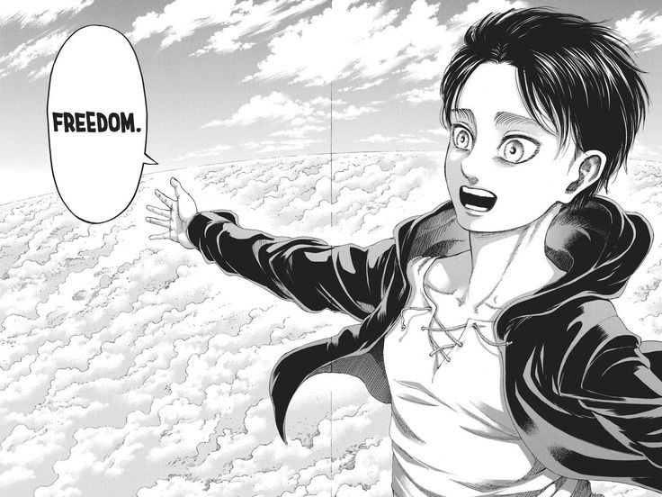

Eren Yeager is introduced as a ten-year-old residing in the town of Shiganshina who dreams of joining the Survey Corps in order to explore the outside world beyond the walls. A year prior to the events of the story, accompanying his father Grisha to meet her parents, Eren saves Mikasa Ackerman from a group of kidnappers, which led to the development of his ideology at a young age.[24] When the Titans invade Shiganshina, Eren is powerless as he watches his mother be devoured by one of the Titans and thus vows to kill every Titan henceforth.[25] Eren then enlists himself in the military, with hazy memories of last meeting his father while receiving a key to their home’s basement.[25] During his first mission at Trost, Eren sacrifices himself to save his friend Armin Arlert from being swallowed by a bearded Titan.[26] Eren manages to transform into a Titan himself, proving his newfound strength worthy to fight for mankind.[27] Eren earns a place in the Special Operations Squad, a branch of Survey Corps under Captain Levi.[28][29] Eren is hunted by a female Titan but is saved by Levi and Mikasa. The Titan is later revealed to be his classmate Annie Leonhart, who is defeated by Eren but freezes herself. Upon being chased by more of Annie's allies, Eren awakens a power known as the "Founding Titan" (始祖の巨人, Shiso no Kyojin), which he subconsciously uses to direct a group of Titans to attack them.[30]
